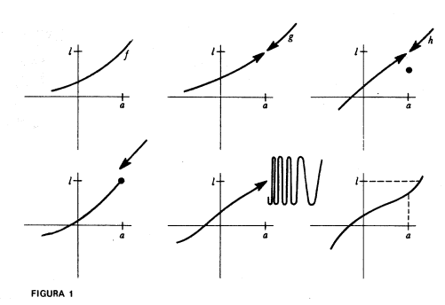
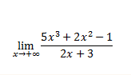
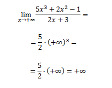
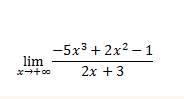
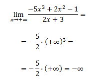
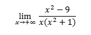
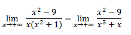
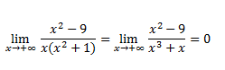

Definicion provisional del limite
La funcion f tiende hacia el limite l cerca de a
si se puede hacer que f(x) esté tan cerca como queramos
de l haciendo x´ éste suficiente cerca de a, pero siendo
distinto de a.
De las seis funciones dibujadas en la figura 1, solamente las tes primeras
tienden hacia l en a. Nótese que aunque no se haya definido g(a) y h(a)
esté definido "de mala manera", se sigue cumpliendo que g y h tienden hacia l cerca de a.
Una función f(x) es continua en un punto a si limx->af(x) = f(a).
Continuidad en un intervalo cerrado [a,b]
Una función f(x) es continua en un intervalo cerrado [a,b] si:
f es continua en a por la derecha
f es continua en b por la izquierda
f es continua en x, para todo x perteneciente al intervalo abierto (a,b)
La funcion f tiende hacia el limite l cerca de a
si se puede hacer que f(x) esté tan cerca como queramos
de l haciendo x´ éste suficiente cerca de a, pero siendo
distinto de a.
De las seis funciones dibujadas en la figura 1, solamente las tes primeras
tienden hacia l en a. Nótese que aunque no se haya definido g(a) y h(a)
esté definido "de mala manera", se sigue cumpliendo que g y h tienden hacia l cerca de a.
Una función f(x) es continua en un punto a si limx->af(x) = f(a).
Continuidad en un intervalo cerrado [a,b]
Una función f(x) es continua en un intervalo cerrado [a,b] si:
f es continua en a por la derecha
f es continua en b por la izquierda
f es continua en x, para todo x perteneciente al intervalo abierto (a,b)

Algunos ejemplos de limite
Límite 1 
Tenemos un cociente de polinomios. Como el límite es al infinito y el grado
del polinomio del numerador es mayor que el del denominador:

Límite 2 
Tenemos un cociente de polinomios. Como el límite es al infinito y el grado
del polinomio del numerador es mayor que el del denominador:

Límite 3 
Efectuamos el producto en el denominador:

Como el límite es al infinito y el grado del polinomio del polinomio del denominador es mayor que el del numerador:
